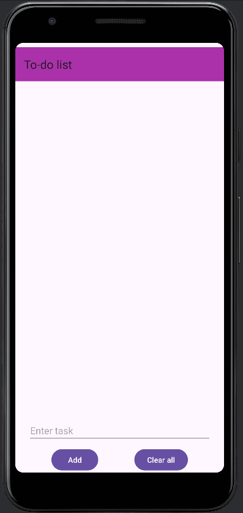

To-do list app
The classic to-do list project! I had recently learned the basics of android development in a Computer Science module called Mobile Computing and I wanted to apply what I had learnt in a meaningful way. While very simple, making this project helped me learn how to put together android components and logic to achieve the simple goal of planning your day. Some basic functions include adding a task or more, crossing them out and deleting them entirely to start a new set of tasks
Layout
Initiating a task

Adding a task